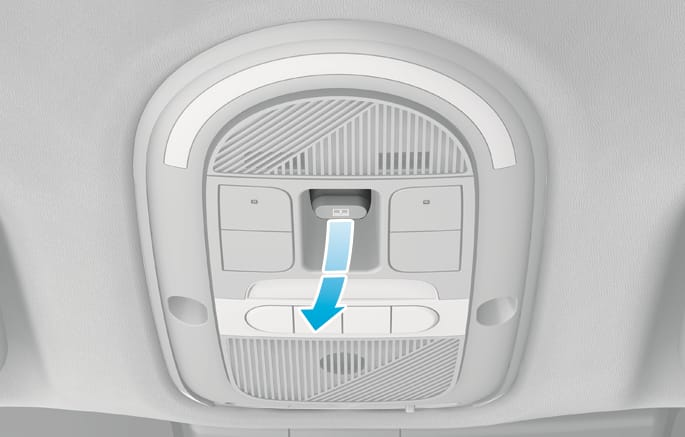

파워 선블라인드 초기화하기

2C_VisionRoofInitialize
다음과 같은 경우 파워 선블라인드를 초기화하십시오.
-
파워 선블라인드와 연결된 배터리 전원이 차단되거나 방전된 경우
-
파워 선블라인드 관련 퓨즈를 교체한 경우
-
파워 선블라인드가 정상적으로 작동하지 않는 경우
-
시동을 걸거나 차량 전원을 'ON' 상태로 두십시오.
-
파워 선블라인드를 완전히 닫은 후 스위치에서 손을 떼십시오.
-
스위치를 앞으로 민 상태를 유지하고, 파워 선블라인드가 살짝 움직이면 스위치에서 손을 떼십시오.
-
파워 선블라인드가 열렸다가 완전히 닫힐 때까지 다시 한번 비전루프 스위치를 앞쪽으로 계속 누르십시오.
-
열림/닫힘 작동이 끝나기 전에는 스위치에서 손을 떼지 마십시오. 도중에 손을 뗀 경우 처음부터 다시 초기화를 진행하십시오.
-
파워 선블라인드를 초기화하지 않으면 파워 선블라인드가 제대로 작동하지 않을 수 있습니다.